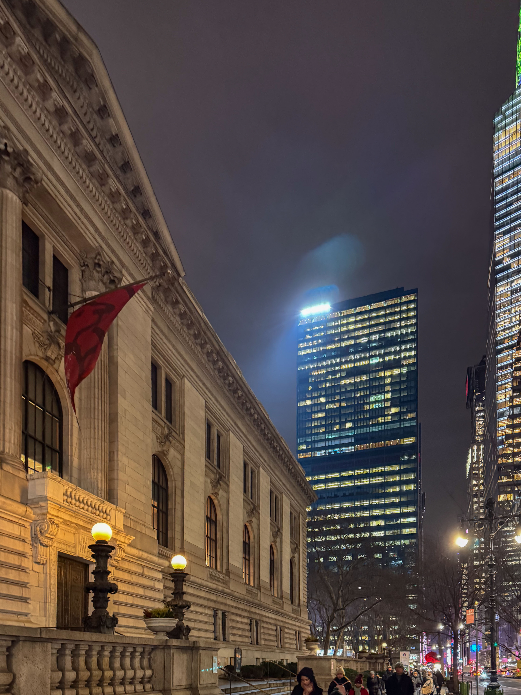

Original vs Edited with Camera Raw


I used the Camera Raw filter to correct this night photograph. Using the Histogram, I adjusted the highlights to -80 and shadows to +20 to remove clipping warnings and preserve detail in the bright lights and dark sky.